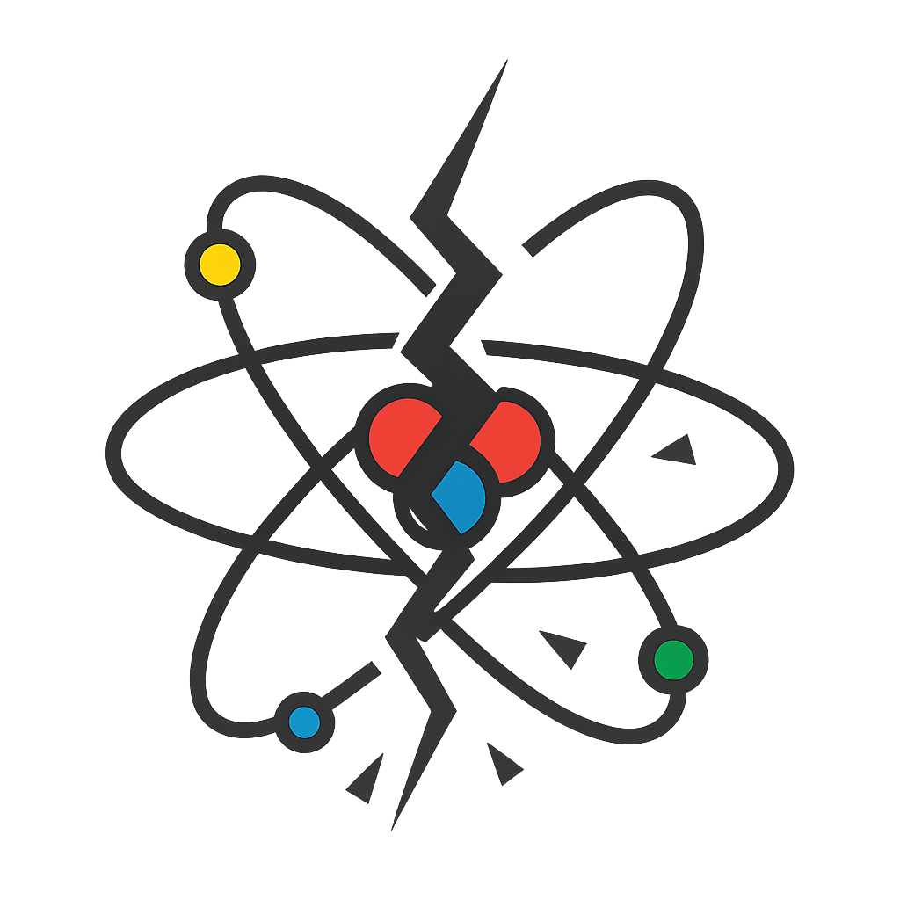

Writing
Developer tools, terminal internals, and building Splice in the open.
April 14, 2026
Claude Code kept scrolling my terminal into oblivion, the formatting was broken half the time, and no editor gave me a sane way to stay organized across projects. So I built one.